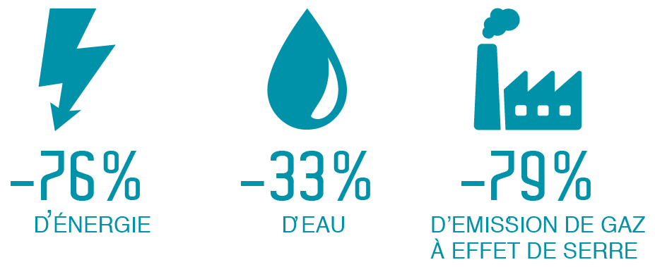

IMPACT ÉCONOMIQUE
Le verre représente à lui seul la moitié du tonnage des emballages ménagers mis sur
le marché français chaque année : 2,5 millions de tonnes par an !
Toujours en vigueur dans les bars restaurants, la consigne permet d’éviter 500 000 t/an
de déchets ménager avec une économie de -35€/t pour le recyclage et -106€/t pour l’enfouissement du verre.
Grâce au retour de la consigne, REVERRECIBLE renforcera l’incitation et la performance de tri des usagers.
Ce qui permettra d’atteindre les objectifs du schéma directeur des déchets 2020-2030 que s’est fixé la Métropole de
Grenoble : 20% de déchets évités, ce qui représente -1000t/an concernant le verre.
Diminution des coûts d’enlèvement des conteneurs à verre
Le retour des bouteilles utilisées se faisant au magasin d’achat
par le consommateur, toute bouteille réutilisée est une bouteille qui n’a pas à être enlevée.
Création d’emplois non délocalisable
Un réseau de consigne crée de l’emploi sur deux secteurs
d’activité : le fonctionnement de la laveuse et le transport des bouteilles.
Diminution des dépôts sauvages
Les bouteilles consignées valent de l’argent.
Il existe donc une motivation simple et efficace en faveur d’un retour de la bouteille au magasin
d’achat pour déconsignation.
En plus d’une esthétique retrouvée, la diminution des dépôts sauvages permet une réduction des coûts liés aux nettoyages des bords de route.
IMPACT ENVIRONNEMENTAL
La production et l’élimination des déchets en verre contribuent à l’épuisement des matières premières,
à la pollution des sols, des eaux et de l’air et posent des questions de sécurité sanitaire et de santé publique.
Le lavage du verre permet un gain environnemental non négligeable par rapport à une gestion classique en recyclage.
